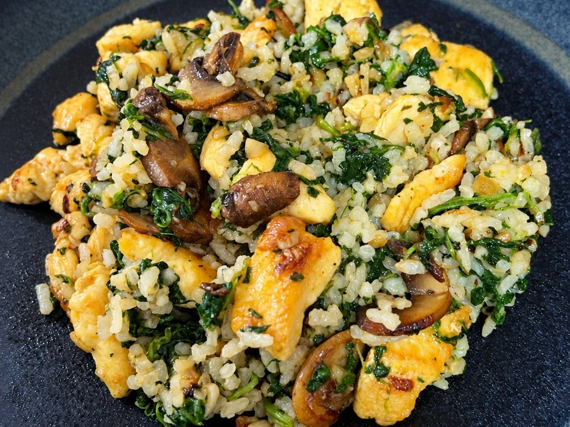

Arroz basmati salteado con pollo, portobello y espinacas al limón
Arroz basmati suelto, pollo dorado y portobello salteados con espinacas. El limón y el perejil se añaden al final.
- Tiempo total
- 35 min
- Preparación
- 15 min
- Cocción
- 20 min
- Raciones
- 2 personas
- Dificultad
- Fácil

Ingredientes
2 personas
Marca lo que ya tienes.
La mantequilla es opcional; el pimentón puede ser dulce o picante.
Preparación
- Cuece el arroz. Lava el arroz basmati si lo deseas y cuécelo en abundante agua con sal hasta que quede en su punto. Escúrrelo y extiéndelo unos minutos para que pierda humedad y quede más suelto.
- Dora el pollo. Corta la pechuga en tiras o dados. Salpimenta y cocínala en una sartén amplia con una cucharada de aceite de oliva hasta que quede bien dorada por fuera y hecha por dentro. Retira y reserva.
- Sofríe la base de verduras. En la misma sartén, añade otra cucharada de aceite y pocha la cebolla picada durante 3 o 4 minutos. Agrega el ajo picado y cocina apenas unos segundos para que no se queme.
- Saltea los portobello. Incorpora los portobello laminados y saltea a fuego medio-alto hasta que pierdan el agua y empiecen a dorarse. Este paso aporta mucho sabor al conjunto.
- Añade las espinacas. Agrega las espinacas frescas y remueve un par de minutos, lo justo para que se reduzcan sin perder demasiado color.
- Mezcla y saltea. Devuelve el pollo a la sartén, añade el arroz cocido y espolvorea el pimentón. Saltea todo junto durante 2 o 3 minutos para que el arroz coja bien el sabor de la sartén.
- Termina con limón. Añade la ralladura y un chorrito de zumo de limón. Si quieres, incorpora también una nuez de mantequilla para dar brillo y redondear el sabor. Remata con perejil picado y sirve al momento.
UN POCO DE OFICIO
Para que te salgan bien
Consejos
- Escurre el arroz y extiéndelo unos minutos antes de saltearlo para que pierda el exceso de humedad.
- No amontones el pollo: debe quedar dorado por fuera y hecho por dentro antes de reservarlo.
Recomendaciones
Deja que los portobello pierdan el agua antes de incorporar las espinacas. Añade el limón al final, como indica la receta.
Cómo servir y presentar
Reparte el salteado en dos platos y termina con el perejil picado. Sirve al momento, con el pollo y las setas repartidos entre el arroz.
MÁS SOBRE ESTA RECETA
↑ Volver a la recetaArroz basmati con pollo: un salteado para cambiar la comida de cada día
Con 180 g de basmati y 300 g de pechuga salen las dos raciones de esta receta. Los portobello, las espinacas y el toque de limón permiten preparar un arroz con pollo distinto, sin horno y sin una salsa aparte. La preparación está organizada en siete pasos, con 35 minutos en total según la receta original.
El arroz se cuece antes del salteado
Aquí el arroz no se cocina en el caldo de una paellera: primero se cuece en agua, se escurre y después se mezcla con el resto de los ingredientes. Por eso conviene tenerlo listo cuando las verduras estén salteadas. Extenderlo unos minutos, tal como se indica en el primer paso, ayuda a que llegue a la sartén sin tanta humedad.
Pollo, portobello y espinacas, por ese orden
El pollo se dora y se retira mientras se prepara la cebolla con el ajo. Los portobello se incorporan después, dejando que pierdan el agua antes de añadir las espinacas. El arroz y el pollo vuelven al final para el salteado conjunto: no hace falta cocerlo todo a la vez ni dejar las espinacas al fuego durante toda la preparación.
El acabado de limón y perejil
La receta usa tanto ralladura como un chorrito de zumo, no el limón entero exprimido de golpe. Se añaden al final junto con el perejil. La nuez de mantequilla queda como opción para el acabado, sin sustituir las dos cucharadas de aceite que se utilizan para cocinar el pollo y las verduras.
Sigue cocinando
Más arroces y fideosArroz seco de calamar, pulpitos y gambas
Arroz seco de calamar, pulpitos y gambas, con sofrito de tomate y caldo de pescado.
Pollo al ajillo
Pollo dorado con abundante ajo, aceite de oliva y un toque de vino blanco.

Macarrones con cherrys, calabacín, albahaca y crema de huevo
Un plato sencillo, fresco y cremoso, con todo el sabor del verano.
Opiniones sobre esta receta
Consultando valoraciones…